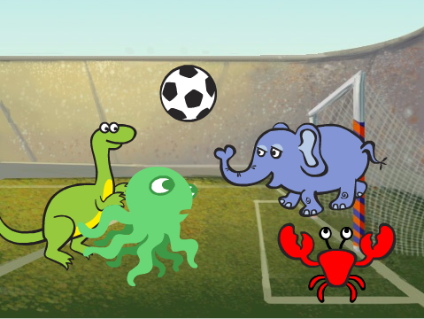
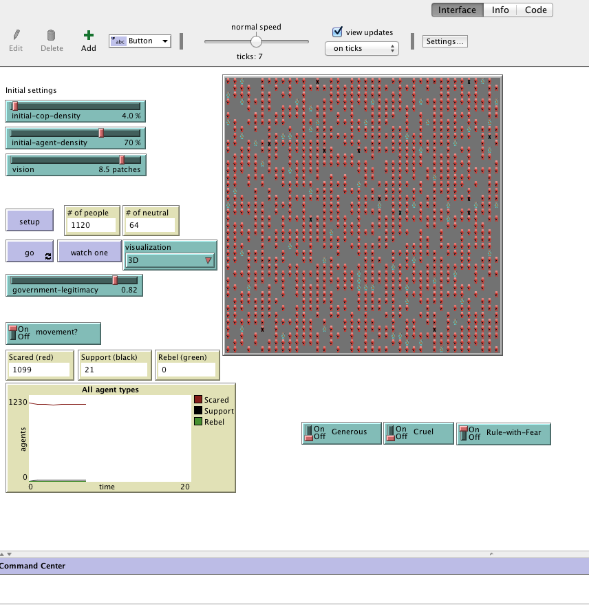

I am a sophomore at Ayala High School. My hobbies include playing piano and sometimes drawing too.
I have been playing piano on and off for years. I often draw in my freetime.
This is what i made on scratch! It was difficult at first, but I think i got the hang of it!
This is my Python Data Project!

This is my Netlogo Rebellion Simulation project! I modified this simulation to shows how fear spreads through
society according to Machiavelli's leadership.